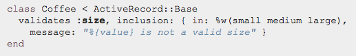

Validations
Validations are used to ensure that only valid data is saved into your database. There are a few types of validations.
- Model-levelcannot be bypassed by end users and are convenient to test and maintain.
- Database constraintsmake validations database dependent but will protect your db if your db is accessible to other apps.
- Client-sideare implemented using validations using JS but may be bypassed if JS is turned off on the user's side. Can provide immediate feedback as they use their site.
- Controller-levelshould not be used often becuase they make your controllers fat. Your application will run faster if you make controllers skinny.
In most cases, model-level validations are most appropriate.
How Does Validation Work?
There are two types of Active Record objects, those that are in your database and those that aren't. When you create a new object, the object doesn't belong in your database table yet. When you call .save on the new object, it will be saved into the corresponding database table. Active record uses the method new_record? to see if the object is in the database. If new_record? is true, then the save method will send a SQL INSERT operation to your database. If you are updating an existing object, then the save method will send a SQL UPDATE command instead.
Validations run before the SQL INSERT or UPDATE operations, and should any validations fail, Active Record will not perform the SQL operation. In your code, the Validations are found in your models of your app. Example of a validation:
Validation Helpers
Provide Validation rules. Types of helpers are listed below.
- acceptance validates if a checkbox on UI was checked when form was submitted. Need to set a boolean
- validates_associatedvalidates the association of your model with other models.
- format validates your objects attribute values by testing wheteher they match a given regexp.
- inlcusion validates whether an objects attribute values are included in a given set(array).
- uniqueness validates the objects attribute on whether or not the attribute value is unique before calling save. Is not constrained through databases. Can also use :scope to limite this uniqueness validation helper.
For more info, check out RailsGuides Validations